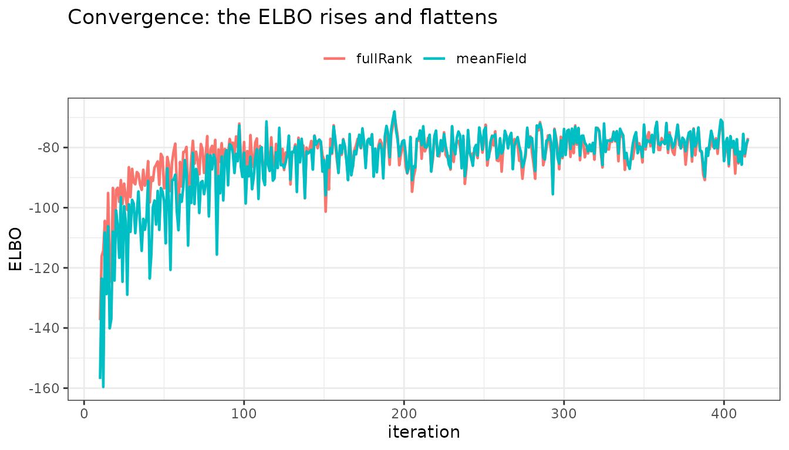
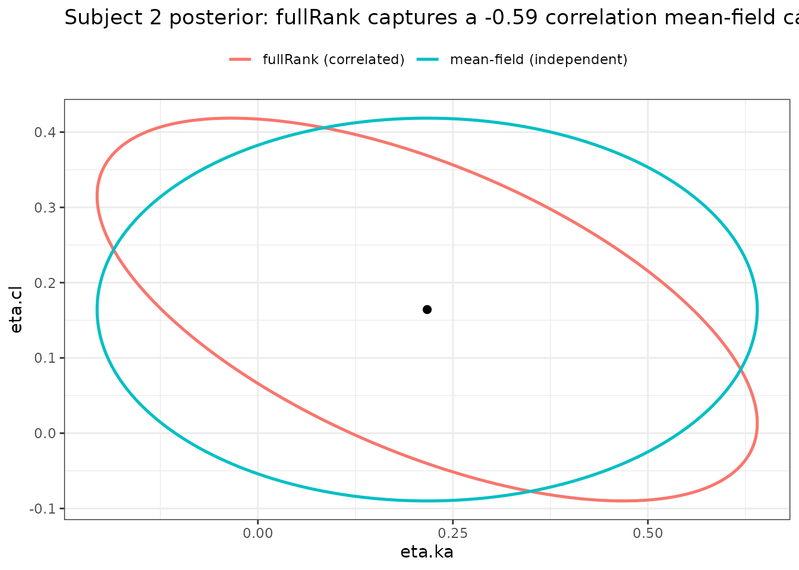

Variational inference for NLME in nlmixr2 (est = "emvi" / "fbvi") vs FOCEI, SAEM, Stan ADVI and VAE
2026-09-22
Source:vignettes/articles/variational-inference.Rmd
variational-inference.RmdVariational inference (est = "emvi" and
est = "fbvi")
nlmixr2 includes two variational-inference estimators in
the style of Kucukelbir et al. (2017), the paper behind Stan’s
vb(). (Stan can also sample the exact posterior
with MCMC, its NUTS sampler; but vb() runs ADVI – it
maximizes the ELBO, it does not run NUTS.) Where FOCEI and SAEM give
point estimates and a full MCMC method such as NUTS samples the exact
posterior, variational inference approximates the
posterior with a Gaussian in an unconstrained space and fits it
by maximizing the evidence lower bound (ELBO) with stochastic gradient
ascent – so it sits between a point estimate and a full MCMC
posterior.
The two methods differ only in what the variational posterior covers:
-
est = "emvi"– variational EM. The variational family covers only the per-subject random effects; the population parameters – thetas,omega, residual error – are point estimates updated by an M-step. Output semantics match FOCEI/SAEM. -
est = "fbvi"– full Bayes. The variational posterior additionally covers the unconstrained population vector under flat priors, giving population credible intervals without MCMC.
They share one control: emviControl() carries the full
argument list and fbviControl() is its thin wrapper setting
pointEstimate = FALSE, the same shim shape
impControl() has over impmapControl().
Neither is the published ADVI algorithm, and neither is named
for it. These methods were briefly called
est = "advi" during development; the name was wrong on both
halves and was corrected before release. The two deviations are worth
stating before any numbers are compared with Stan:
- There is no automatic differentiation. The gradients come from the FOCEI forward sensitivities – the inner per-subject eta gradient and the outer population sensitivity contraction. That is a feature (it reuses the same ODE and sensitivity machinery as the rest of nlmixr2), but it means the “AD” in ADVI never described this implementation.
-
Even
fbviis not the published algorithm. Published ADVI places every parameter, covariance parameters included, in the variational family, so a full-rank family there produces a joint posterior covariance over the entire parameter vector.fbvicarries the between-subjectomegaas per-eta log-variances (plus any declared correlations) rather than as a free covariance, andemvidoes not put the population parameters in the variational family at all.
The practical consequence is that agreement with a Stan
vb() fit should be expected where the two objectives
genuinely coincide – as in the single random-effect cross-check later in
this article – and not as a general guarantee.
Two further properties make these useful in a pharmacometric workflow:
- it is a drop-in
est = "emvi"on an ordinary nlmixr2 model – no Stan code; -
emvireproduces the FOCEI/SAEM population estimates, so the output slots into the usual tables and diagnostics, while additionally giving an approximate posterior over the individual random effects (with afullRankfamily that captures their correlations).
The rest of this article leads with a worked example; the algorithm details and a five-way comparison with FOCEI, SAEM, Stan’s ADVI and nlmixr2’s VAE come at the end.
Worked example: a drop-in estimator that also gives a posterior
We use the classic theophylline data (theo_sd) and a
one-compartment oral model with between-subject variability on
ka and cl.
library(nlmixr2)
theoModel <- function() {
ini({
tka <- 0.45; tcl <- 1; tv <- 3.45
eta.ka ~ 0.6; eta.cl ~ 0.3
add.sd <- 0.7
})
model({
ka <- exp(tka + eta.ka)
cl <- exp(tcl + eta.cl)
v <- exp(tv)
d/dt(depot) <- -ka * depot
d/dt(center) <- ka * depot - cl / v * center
cp <- center / v
cp ~ add(add.sd)
})
}It reproduces FOCEI and SAEM
The only change from a FOCEI or SAEM run is
est = "emvi":
fitFocei := nlmixr2(theoModel, nlmixr2data::theo_sd, est = "focei",
control = foceiControl(print = 0L))
fitSaem := nlmixr2(theoModel, nlmixr2data::theo_sd, est = "saem",
control = saemControl(nBurn = 200L, nEm = 300L, print = 0L))
fitEmvi := nlmixr2(theoModel, nlmixr2data::theo_sd, est = "emvi",
control = emviControl(iters = 500L, print = 0L))The population parameters agree across all three:
round(rbind(FOCEI = fitFocei$theta, SAEM = fitSaem$theta, emvi = fitEmvi$theta), 3)
#> tka tcl tv add.sd
#> FOCEI 0.405 1.030 3.429 0.781
#> SAEM 0.392 1.033 3.424 0.780
#> emvi 0.392 1.026 3.426 0.798
## between-subject variances (Omega diagonal)
round(rbind(FOCEI = diag(fitFocei$omega), SAEM = diag(fitSaem$omega),
emvi = diag(fitEmvi$omega)), 3)
#> eta.ka eta.cl
#> FOCEI 0.326 0.121
#> SAEM 0.332 0.121
#> emvi 0.333 0.135fitEmvi is an ordinary nlmixr2FitData: it
has IPRED, CWRES, a parFixed
table with standard errors and confidence intervals, shrinkage, and
everything else you expect. So far emvi is simply a
variational route to the same answer – useful as an independent check,
and (as we will see) as a starting point for uncertainty
quantification.
The extra it gives you 1: the ELBO trajectory
Where FOCEI runs a Newton optimizer and SAEM a
stochastic-approximation EM, these maximizes the ELBO by stochastic
gradient ascent. The ELBO trajectory is the natural convergence
diagnostic (it should rise and flatten). Fitting with
returnVi = TRUE exposes the raw optimization object,
including the per- iteration ELBO:
library(ggplot2)
viFR := nlmixr2(theoModel, nlmixr2data::theo_sd, est = "emvi",
control = emviControl(iters = 500L, print = 0L,
returnVi = TRUE, viFamily = "fullRank"))
viMF := nlmixr2(theoModel, nlmixr2data::theo_sd, est = "emvi",
control = emviControl(iters = 500L, print = 0L,
returnVi = TRUE, viFamily = "meanField"))
elboDf <- rbind(
data.frame(iter = seq_along(viFR$elbo), elbo = viFR$elbo, family = "fullRank"),
data.frame(iter = seq_along(viMF$elbo), elbo = viMF$elbo, family = "meanField"))
elboDf <- elboDf[elboDf$iter >= 10, ] # drop the huge early transient
ggplot(elboDf, aes(iter, elbo, colour = family)) +
geom_line(linewidth = 0.8) +
labs(x = "iteration", y = "ELBO", colour = NULL,
title = "Convergence: the ELBO rises and flattens") +
theme_bw() + theme(legend.position = "top")
The extra it gives you 2: a correlated posterior over individual parameters
FOCEI summarizes each subject by a single EBE (a point) plus,
implicitly, a Laplace covariance at the mode. SAEM does not retain a
per-subject posterior at all. The variational methods keep an explicit
Gaussian posterior q(eta_i) for every subject, and with
viFamily = "fullRank" that Gaussian has a full
covariance – it can represent the correlation between
a subject’s random effects, which the default meanField
(diagonal) family forces to zero.
Reconstruct one subject’s posterior from the packed Cholesky factor
(viFR$scale, one row per subject, lower-triangle row-major)
and draw the 95% covariance ellipse for both families:
## pick the subject whose posterior correlation is strongest
subjCov <- function(scale, i) { # neta = 2 -> packed (L11, L21, L22)
L <- matrix(c(scale[i, 1], 0, scale[i, 2], scale[i, 3]), 2, 2, byrow = TRUE)
L %*% t(L)
}
corr1 <- sapply(seq_len(nrow(viFR$scale)),
function(i) { S <- subjCov(viFR$scale, i); S[1, 2] / sqrt(S[1, 1] * S[2, 2]) })
i <- which.max(abs(corr1))
mu <- viFR$mu[i, ]
covF <- subjCov(viFR$scale, i) # fullRank: correlated
covM <- diag(diag(covF)) # mean-field: correlations removed
ellipse <- function(mu, S, label, npt = 200) {
th <- seq(0, 2 * pi, length.out = npt)
circ <- rbind(cos(th), sin(th)) * sqrt(qchisq(0.95, 2))
xy <- t(chol(S)) %*% circ
data.frame(eta.ka = mu[1] + xy[1, ], eta.cl = mu[2] + xy[2, ], family = label)
}
ellDf <- rbind(ellipse(mu, covF, "fullRank (correlated)"),
ellipse(mu, covM, "mean-field (independent)"))
ggplot(ellDf, aes(eta.ka, eta.cl, colour = family)) +
geom_path(linewidth = 0.9) +
geom_point(data = data.frame(eta.ka = mu[1], eta.cl = mu[2]),
aes(eta.ka, eta.cl), inherit.aes = FALSE, size = 2) +
labs(colour = NULL,
title = sprintf("Subject %d posterior: fullRank captures a %.2f correlation mean-field cannot",
i, corr1[i])) +
theme_bw() + theme(legend.position = "top")
The fullRank ellipse is tilted – this
subject’s ka and cl posteriors are correlated
(a faster ka trades off against a higher cl to
fit the same curve). The meanField ellipse is axis-aligned
by construction, so it misstates the joint uncertainty. Whenever
individual-parameter uncertainty feeds a downstream decision (precision
dosing, exposure prediction), that correlation matters, and a
fullRank variational fit is the cheapest way in nlmixr2 to
get it.
The extra it gives you 3: full-Bayes population credible intervals
With est = "fbvi", the variational posterior
additionally covers the population parameters (flat priors), giving a
fast, MCMC-free approximate Bayesian fit. The optimization then returns
a posterior mean over the unconstrained population vector
(mPop) and its covariance (viCov), from which
population credible intervals follow directly:
fitBayes := nlmixr2(theoModel, nlmixr2data::theo_sd, est = "fbvi",
control = fbviControl(iters = 800L, print = 0L, returnVi = TRUE))
## posterior mean + covariance over the unconstrained population vector
## (log ka / cl / v are the first three entries); 95% credible intervals for the
## typical structural values:
m <- fitBayes$mPop
sd <- sqrt(diag(fitBayes$viCov))
data.frame(parameter = c("ka", "cl", "v"),
median = round(exp(m[1:3]), 2),
lower = round(exp(m[1:3] - 1.96 * sd[1:3]), 2),
upper = round(exp(m[1:3] + 1.96 * sd[1:3]), 2))
#> parameter median lower upper
#> 1 ka 1.51 1.30 1.75
#> 2 cl 2.72 2.45 3.01
#> 3 v 30.35 28.65 32.16Because fbvi and Stan’s vb() optimize the
same variational objective, the two agree on a model both can
express. On a linear random-intercept model
y_ij = theta + eta_i + err, the population posterior means
from est = "fbvi" match rstan::vb() within
Monte-Carlo tolerance – but without writing or compiling any Stan
code:
## illustrative cross-check (needs rstan + a toolchain; not run at build time)
stanCode <- "
data { int<lower=1> N; int<lower=1> J; int<lower=1,upper=J> id[N]; vector[N] y; }
parameters { real theta; real<lower=0> omega; real<lower=0> sigma; vector[J] eta; }
model { eta ~ normal(0, omega); y ~ normal(theta + eta[id], sigma); }"
sm <- rstan::stan_model(model_code = stanCode)
vb <- rstan::vb(sm, data = sdat, algorithm = "meanfield")
## mean(rstan::extract(vb)$theta) ~= fitBayes$mPop[1] (same variational objective)When to choose variational inference
Reach for est = "emvi" or est = "fbvi"
when:
- you want uncertainty on the individual parameters –
a real posterior per subject, with correlations (
fullRank) – not just an EBE point and a Laplace standard error; - you want an approximate Bayesian fit (population credible intervals) but full MCMC/NUTS is too slow, and you do not want to re-code the model in Stan – variational inference is a single gradient-based run on the model you already have;
- you want an independent cross-check of a FOCEI or SAEM fit from a different estimation principle that nonetheless targets the same estimates;
- you value a reproducible, parallel, resumable
optimizer: the reparameterization noise is drawn from a counter-based
stream keyed by the global iteration index, so results are identical
regardless of core count and a short run is a bit-for-bit prefix of a
longer one (
resume =continues it).
Stay with FOCEI when you want the fastest deterministic point estimate and are comfortable with the Laplace approximation; use SAEM when the likelihood is difficult (multi-modal, stiff, mixtures) and a robust stochastic EM is worth the cost; and step up to a full MCMC sampler (such as Stan’s NUTS) when you need an exact posterior and the Gaussian approximation is not accurate enough. For very large populations or automatic covariate selection, see the amortized VAE method.
The remainder of this article is the algorithm reference: how variational inference works, the nlmixr2-specific choices, and the five-way comparison. Skip it unless you want the internals.
How variational inference works
Variational inference replaces the intractable posterior
p(z | y) with the closest member q(z) of a
simple family, “closest” meaning smallest Kullback-Leibler divergence
KL(q || p). Minimizing that KL is equivalent to maximizing
the evidence lower bound
ELBO(q) = E_q[ log p(y, z) ] - E_q[ log q(z) ] <= log p(y)ADVI (Kucukelbir et al. 2017) makes this automatic in three moves:
- Transform to unconstrained space. Every latent variable is mapped to the real line (log for a positive scale, logit for a bounded one, etc.), so a single Gaussian family can be used everywhere; the change of variables adds a log-Jacobian term to the objective.
-
Gaussian variational family.
qis a Gaussian in that unconstrained space – either mean-field (diagonal covariance, fully factorized) or full-rank (a dense Cholesky factor, capturing correlations). -
Stochastic gradient of the ELBO by the reparameterization
trick. Write
z = mu + L * swiths ~ N(0, I); then the ELBO gradient is an expectation over the fixeds, estimated with a few Monte-Carlo draws (nMc), and the parameters(mu, L)are moved uphill with an adaptive step size.
The loop:
The nlmixr2 choices that make it an NLME method
nlmixr2’s variational methods take the variational math of Stan’s ADVI and specialize it to the mixed-effects setting, with a few deliberate differences – enough of them that the result is a different algorithm, not a port:
-
Gradients from FOCEI sensitivities, not autodiff.
The gradient of the log-joint is assembled from the FOCEI inner
per-subject eta gradient and the outer population sensitivity
contraction – the same forward-sensitivity ODE machinery FOCEI already
uses. This avoids a second automatic-differentiation stack and keeps the
ODE handling, residual-error models, and event logic identical to the
rest of nlmixr2. (The
likelihood =control chooses which inner objective:focei,foce,focep, orlaplace.) -
A block structure matched to the model.
fullRankis a block full-rank family: a denseneta x netaCholesky per subject (correlations within a subject’s random effects) plus a dense block over the population vector, with mean-field across the blocks. This is the structure an NLME posterior actually has, and it is far cheaper than a single dense covariance over every latent variable. -
Two methods on the inference axis.
est = "emvi"is a variational-EM hybrid:qcovers the per-subject etas, while the population thetas / omega / residual error are point estimates maximized by the same ELBO gradient, so the output matches FOCEI/SAEM semantics.est = "fbvi"putsqover the population vector too (flat priors) for a full-Bayes fit.pointEstimate =is still the underlying switch, but it now followsestby default.
A caveat worth stating: the ELBO is a bound, so the point estimates are biased
The population point estimates maximize the ELBO, not the likelihood. Because
ELBO = log p(y | theta) - KL(q || p(eta | y, theta)),
any dependence of that KL divergence on theta moves the
maximizer away from the MLE. This is variational maximum
likelihood, and it is a property of the method, not an
implementation shortcoming.
For the variance components the direction of the bias is
known: downward. The omega M-step is
Omega = mean_i(mu_i mu_i' + Sigma_i), so if the variational
family understates the per-subject posterior spread
Sigma_i, the estimated between-subject variability inherits
that understatement. The effect is worst for
viFamily = "meanField", which cannot represent
within-subject posterior correlation at all – that is exactly why
"fullRank" is the default here, rather than the mean-field
family that is usually the default elsewhere. Structural (typical-value)
parameters are much less affected, which is why they line up with FOCEI
and SAEM in the comparison above.
Practical guidance: keep viFamily = "fullRank", and if
the between-subject variances are themselves the quantity you care
about, cross-check against est = "focei" or
est = "saem" rather than reporting them from a variational
fit alone.
This is a different kind of approximation from FOCEI’s, not
simply a worse one: FOCEI uses a Laplace approximation to the marginal
likelihood, which is not a bound and whose error has no guaranteed sign;
the variational objective is a strict lower bound whose error is a KL
divergence with a systematic consequence for variances. *
Correlated random effects are estimated. A declared
block (eta.cl + eta.v ~ c(0.1, 0.01, 0.1)) has its
off-diagonals estimated, as in saem and the
focei family: the population M-step targets
mean_i(mu_i mu_i') under meanField and
mean_i(mu_i mu_i' + L_i L_i') under fullRank,
where the per-subject L_i L_i' already carries the
within-subject cross-covariance. Only entries the model declares are
estimated (the second moment is masked to the model’s structure, as
saem does with covstruct1), a
fixed() covariance is held, and correlations are held at
zero for the first perNoCor (default 0.75) of the run so
the variances settle first – saem’s nb_correl
rule. A diagonal model is unaffected. * A different default
step-size grid. adaptEta searches
etaCandidates, which defaults to
c(0.01, 0.025, 0.05, 0.1, 0.25) where Stan searches
c(100, 10, 1, 0.1, 0.01). The grid is a control, not a
constant – passing
emviControl(etaCandidates = c(100, 10, 1, 0.1, 0.01))
reproduces Stan’s search exactly. The default differs because the
gradients differ: ours come from FOCEI sensitivities on the model’s own
scale rather than from AD through a Stan program, so the useful step
sizes sit lower. * Reproducible, parallel, resumable. A
counter-based RNG keyed by the global iteration index makes the fit
independent of the number of cores, a short run a bit-for-bit prefix of
a long one, and resume = an exact continuation. *
Summaries, not draws. Stan’s vb() writes
output_samples (1000 by default) draws from the variational
approximation; est = "emvi" returns the approximation
itself – the variational mean and its Cholesky factor, plus
$env$viCov for the population block under full Bayes. See
Why no posterior draws? below. * Optional prior
tempering. emviControl(klWarmup =) inflates the
population prior for a warm-up period, ramping back to 1. It is
off by default and it changes the objective function
mid-run – see Prior tempering below.
Why no posterior draws?
The variational family is a Gaussian. The approximation is therefore completely characterized by its mean and covariance, both of which are returned; a sample drawn from it carries no information the parameters do not already carry, only Monte-Carlo noise and a dependence on the draw seed in numbers users would reasonably treat as the result.
If you want draws, generate them from the returned summaries – this
is the whole of what Stan’s output_samples does
internally:
## draws for subject i from the returned variational posterior
L <- matrix(0, neta, neta); L[lower.tri(L, diag = TRUE)] <- fit$env$viState$Lpack[i, ]
draws <- t(fit$env$viState$mu[i, ] + L %*% matrix(rnorm(neta * 1000), neta, 1000))There is also nothing downstream that would consume them:
parFixed, the covariance step, and simulation-based
diagnostics (VPC, augPred()) all take point estimates plus
a covariance matrix, not a draw matrix, and the individual random
effects are already reported as EBEs. Emitting draws would add an output
contract that nothing reads.
Prior tempering (klWarmup), and why it is off by
default
emviControl(klWarmup = n) inflates the population prior
by a factor ramping geometrically from temperInit (default
10) down to 1 over n iterations. It guards against
posterior collapse – the per-subject variational scale
shrinking so early that the gradient signal for the variational mean
dies – and it is the variational analogue of
saemControl()’s perSa simulated-annealing
phase. True simulated annealing does not transfer, because variational
inference has no MCMC kernel that needs to be kept wide.
It changes the objective function mid-run, which is
why it is off by default and worth stating plainly. During the warm-up
the algorithm maximizes a tempered surrogate, not the ELBO. Three
consequences follow: the convergence theory for the ELBO does not cover
the warm-up iterations; the reported ELBO trace is not comparable across
the tempering boundary, so the trajectory plot will show a level shift
there rather than a smooth approach; and the tol
early-stopping test is suppressed until tempering finishes, since a
moving objective cannot be tested for having stopped moving. The
adaptEta step-size search likewise scores its candidates on
the untempered objective.
Turn it on for a model where the variational scale visibly collapses early; leave it off otherwise.
emvi/fbvi among the estimators: FOCEI, SAEM, Stan ADVI, VAE
| Aspect | FOCEI | SAEM | nlmixr2 emvi/fbvi | Stan ADVI (vb) |
nlmixr2 VAE |
|---|---|---|---|---|---|
| What you get | Point ML: EBEs + Laplace SEs | Point ML via stochastic EM | Approx posterior over etas; point-estimate or full-Bayes population | Full approx posterior over all parameters | Approx posterior via an amortized encoder + covariate selection |
| Random-effect posterior | Gaussian at the mode (Laplace), per subject | MCMC samples in the E-step (not retained) | Explicit Gaussian q(eta_i); fullRank =
correlated
|
Global mean-field / full-rank in unconstrained space | Encoder-parameterized Gaussian |
| Marginal-likelihood handling | Laplace / first-order linearization | Exact E-step by MCMC (stochastic approximation) | ELBO (variational lower bound); Gaussian in unconstrained space | Same ELBO, same transform | ELBO |
| Gradient source | Analytic / FD forward sensitivities | Simulation (no gradient of the marginal) | FOCEI forward sensitivities (no autodiff) | Reverse-mode autodiff | Backprop through the encoder + rxode2 sensitivities |
| Bayesian? | No (frequentist) | No (frequentist) |
Optional (est="fbvi", flat
priors) |
Yes (with priors) | No (population point estimate) |
| Model specification | rxode2 model | rxode2 model | rxode2 model | Stan program (hand-written) | rxode2 model |
| Correlated posterior | Only via the Laplace Hessian | – |
Yes (fullRank) |
Yes (full-rank) | Yes |
| Scales to large N / covariate search | Standard | Standard | Per-subject params, O(N) | Per-latent params | Amortized; automatic covariate selection |
| Cost / character | Fast, deterministic | Robust, stochastic, slower | One SGD run; reproducible, resumable | One SGD run; general-purpose | Training run; scales, selects covariates |
The short version: these keep Stan ADVI’s variational math
but are not Stan’s ADVI. They swap autodiff for the FOCEI
sensitivities, specialize the variational family to the per-subject
block structure of an NLME model, and split the point-estimate hybrid
(emvi, which drops into an existing FOCEI/SAEM workflow)
from the full-Bayes mode (fbvi). Compared with FOCEI and
SAEM it adds a genuine (approximate) posterior, especially the
correlated fullRank per-subject posterior; compared with
the VAE it is simpler and more directly
comparable to FOCEI, but does not amortize across subjects or select
covariates.
References
- Kucukelbir A, Tran D, Ranganath R, Gelman A, Blei DM. Automatic
Differentiation Variational Inference. Journal of Machine Learning
Research,
- Blei DM, Kucukelbir A, McAuliffe JD. Variational Inference: A Review for Statisticians. Journal of the American Statistical Association, 2017.
- Kingma DP, Welling M. Auto-Encoding Variational Bayes. ICLR, 2014 (the reparameterization trick).
- Carpenter B, et al. Stan: A Probabilistic Programming
Language. J. Stat. Soft., 2017 (
rstan::vb). - nlmixr2 VAE-NLME article for the amortized-encoder method.